1. Environment Deployment
Run LayerCake Cooker.
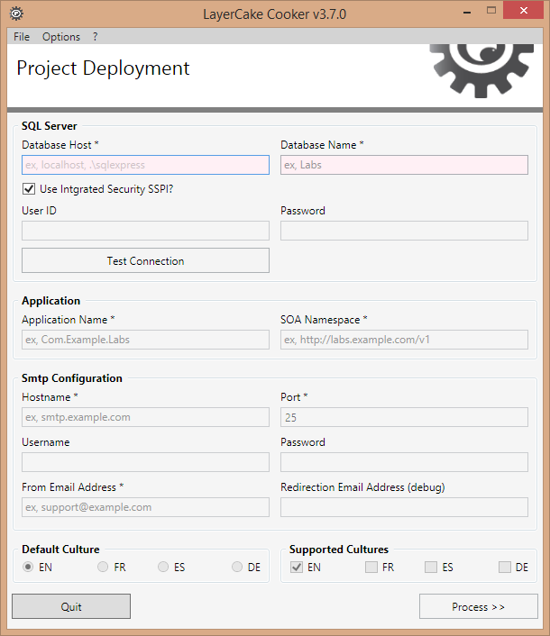
SQL Server section
-
Database Host
Address or instance of the SQL Server.
-
Database Name
Name of the database. This database must not exist and will be created by the process.
-
Use Integrated Security SSPI
Option to use the Windows authentication.
-
User ID (optional)
Login to connect to the SQL Server.
-
Password (optional)
Password to connect to the SQL Server.
Application section
-
Application Name
Name of the project (also used to the project namespace).
You should enter an application name using the following pattern Domain.CompanyName.ProjectName.
-
SOA Namespace
This URL doesn't need to exist on the network, it is only a namespace used by the WCF.
Smtp Configuration section
-
Hostname
Hostname of the Smtp service (ISP relay, gateway's address, localhost, etc).
-
Port
Port of the Smtp service.
-
Username (optional)
Login to connect to the Smtp service.
-
Password (optional)
Password to connect to the Smtp service.
-
From Email Address
Email address used to fill the From field.
-
Redirection Email Address (optional)
All outgoing mails will be redirected to this address (and Cc/Bcc fields will be set with empty value).
Fill the fields about the SQL Server section and press the button Test Connection to validate.
Database Name
The database must not exist (the process will create and initialize it).
If everything seems under control the next sections become enable.
Fill the other sections following the example below (adjust the values of the Smtp Configuration section with yours).
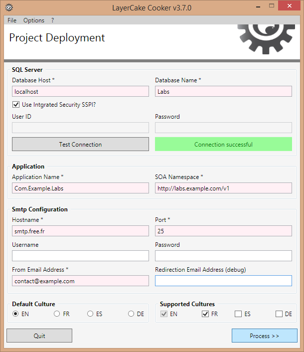
Press the Process button to continue.
Select the directory where the Visual Studio solution will be deployed.
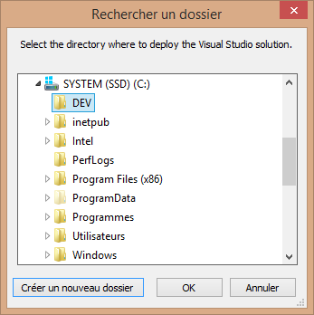
Deployment Path
It is recommended to select a short path to avoid TooLongPathException
Press OK to run the process.
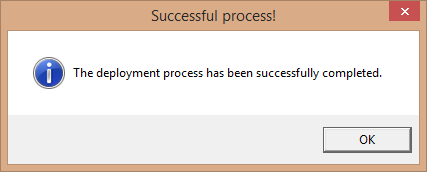
Once the process is done you should have this content.
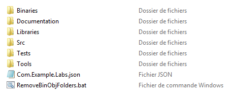
-
Binaries
Contains tools and executables used by LayerCake Generator.
-
Documentation
Contains the documentation files.
Use this directory to store your project's documentation files.
-
Libraries
Contains external assemblies.
Use this directory to store your project's external libraries.
-
Src
Contains your application projects.
-
Tests
Contains the Unit Test projects.
-
Tools
Contains the tools (sources) that come with LayerCake Generator.
-
Com.Example.Labs.json
LayerCake Generator configuration file.
LayerCake Generator Configuration File
This file should'nt be moved from the default location. Moving it may break the code generation process. However if you really want to move it, open it and report to the Config.SolutionDir key.
Open the Src folder.
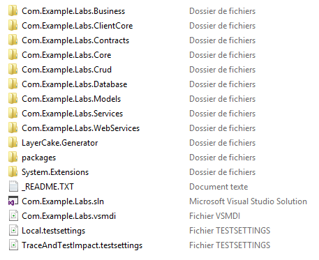
-
Business
Contains the business classes.
Business classes contain the business logic of the application.
-
ClientCore
Contains all the classes used at client-side.
-
Contracts
Contains the service contracts.
Used by the WCF layer (server and client-side).
-
Core
Contains the common classes used by the other projects.
-
Crud
Contains the classes to access to the database.
-
Database
Contains the Database Project (database scripts, stored procedures, etc).
Database Project Synchronization
- When modifying the database's structure on the SQL Server directly do not forget to synchronize the Database Project.
- When modifying the database's structure on the Database Project do not forget to update the database's structure using the Compare/Update operation.
Finally do not forget to execute LayerCake Generator to update the project code (see later).
-
Models
Contains the entity and model classes.
-
Services
Contains the applicative services.
-
WebServices
Contains the WCF layer.
Provides an ASP.NET shell (logs, cache statistics, execution tracer, process errors, etc).
-
LayerCake.Generator
Contains the generator source code.
-
packages
Contains the NuGet packages.
-
System.Extensions
Contains common classes.
Now have a look to the database.
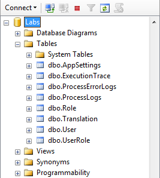
-
AppSettings
Table used to store application configuration (Key-Value pairs).
-
ExecutionTrace
Table used to store statistics on the execution time of stored procedures, methods, etc.
-
ProcessErrorLog
Table used to store stored procedures errors.
When an error occurred on a procedure a record is automatically inserted in this table.
-
ProcessLog
Table used to store process logs (stored procedures outputs, debug, etc).
-
Translation
Table used to store translation strings.
Table used by LayerCake Generator when processing (see later).
-
User, UserRole & Role
Tables used to the User Authentication Support and the WCF Security Service (see later).
2. Solution Initialization
Open the Visual Studio solution and rebuild the solution.
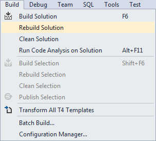
Once done execute LayerCake Generator.
Select the configuration file and press the Open button.
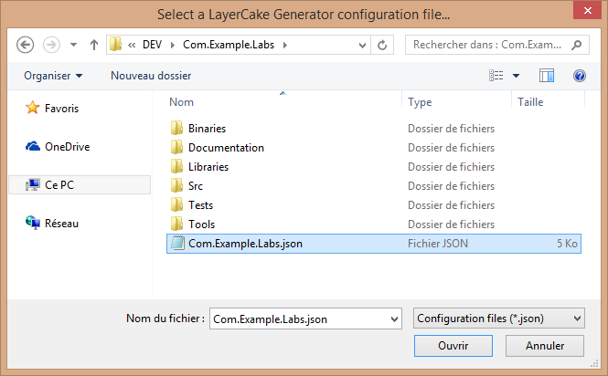
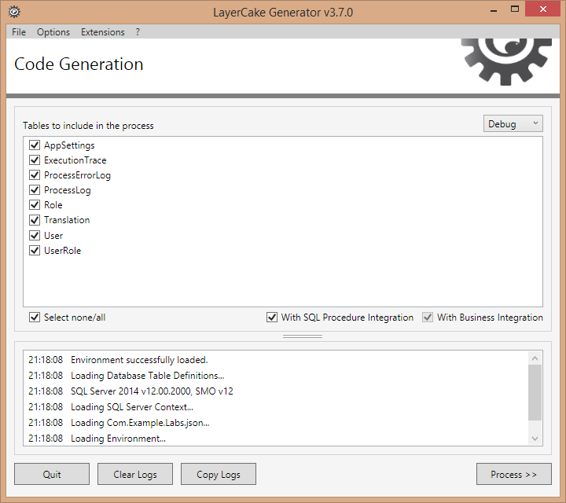
Press the Process button (wait a moment while the process is running).
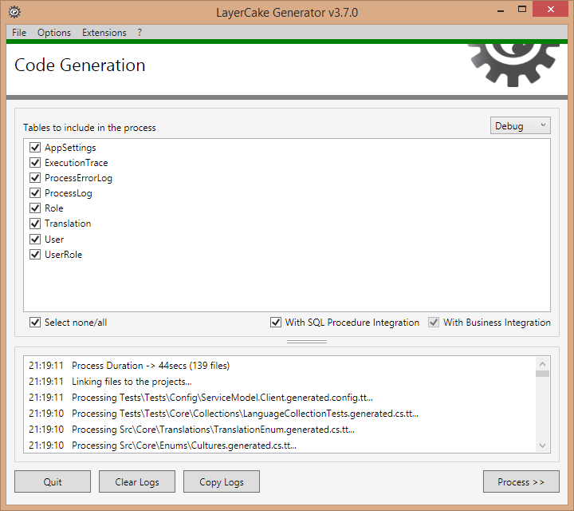
When the process is finished Visual Studio may ask you to reload all the projects.
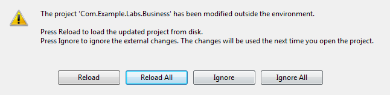
Compile the solution pressing F6.
Press F5 to run the WebServices project.
If everything is Ok you should see the Monitoring Dashboard (under construction).
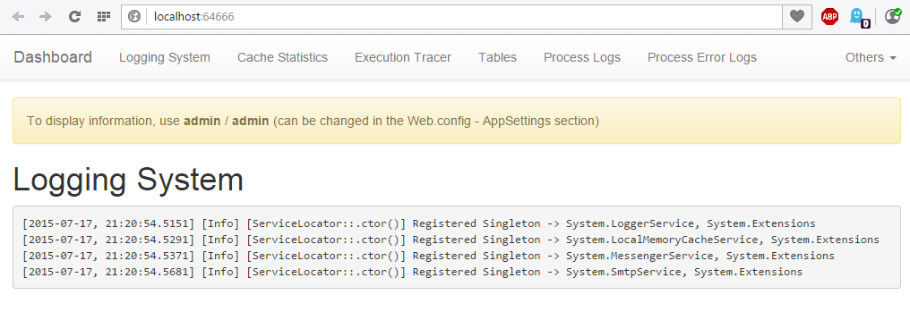
The solution is now ready to be custom.